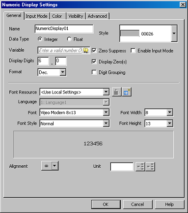
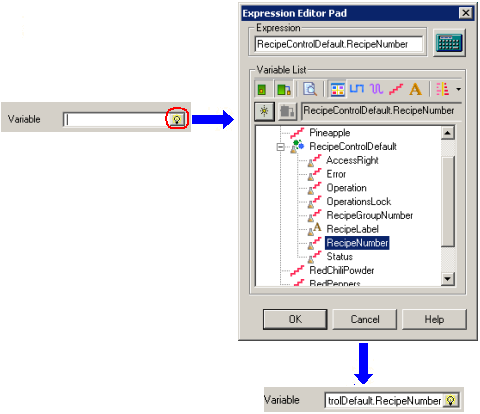
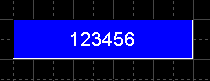

|
|
|
|
|
|
|
|
You can use the numeric display tool to set up recipe parts in the Editor. A numeric display allows you to enter or change numeric data in Runtime. This capability allows you to perform Runtime operations, such as:
Changing the recipe group or recipe number. You can change the value to open a new recipe or recipe group.
Save as a new recipe. You can change a recipe number and then save it as a new recipe.
Modifying ingredient values. You can modify ingredient values, and then save the data to the recipe file, or send the new values to equipment. The format for referencing recipe ingredient variables is: RecipeGroupName.VariableName
For more information, see Section 6.11, Recipe Variables.
In the Editor, draw a numeric display. For details on how to create a numeric display and define the settings, see Section 11.3.1, Setting Up Numeric Display.

To change numeric data, such as the recipe number:
In the Data Type property, select Integer.
In the Variable property, click to open the Expression Editor Pad dialog box, and select RecipeNumber from the Recipe Controls group. Click OK.

Click OK. A numeric display to control the recipe number is created.
